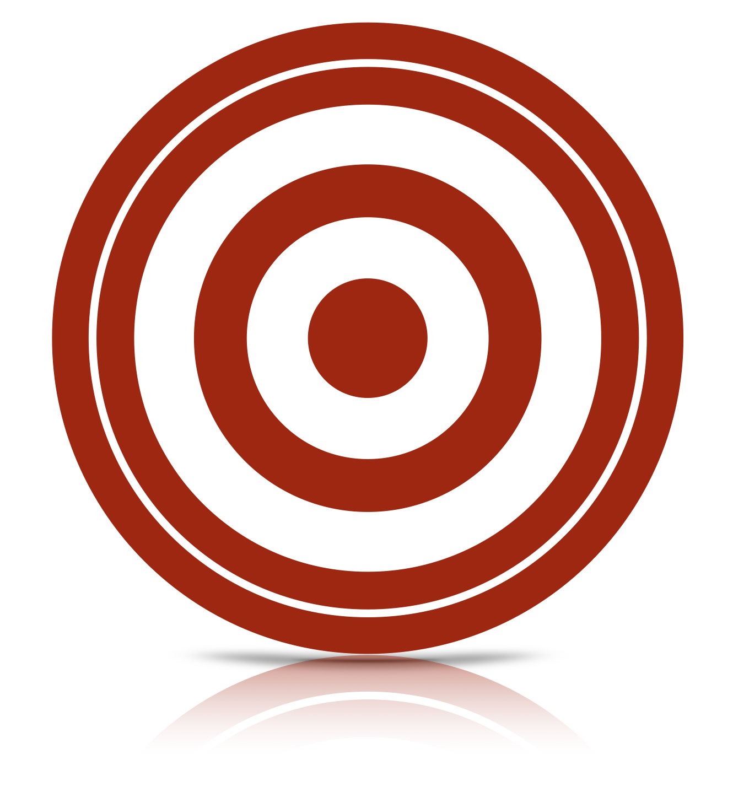

Point estimation
Statistical Inference - PhD EcoStatData
Homepage

This unit will cover the following topics:
- Methods of finding estimators
- Methods of evaluating estimators
- Best unbiased estimators
- Asymptotic behavior
- Robustness and model misspecification
The rational behind point estimation is quite simple:
When sampling is from a population described by a pdf or a pmf f(\cdot ; \theta), knowledge of \theta yields knowledge of the entire population.
Hence, it is natural to seek a method of finding a good estimator of the unknown point \theta.
Methods of finding estimators
Estimator
In principle, the range of the estimator coincide with that of the parameter, i.e. \hat{\theta} : \mathcal{Y} \rightarrow \Theta, but there are exceptions.
An estimator \hat{\theta}(Y_1,\dots,Y_n) is a function of the sample Y_1,\dots,Y_n and is a random variable.
An estimate \hat{\theta}(y_1,\dots,y_n) is a function of the realized values y_1,\dots,y_n and is a number.
We will use the notation \hat{\theta} to denote both estimators and estimates whenever its meaning is clear from the context.
Methods of moments
- The methods of moments is, perhaps, the oldest method of finding point estimators, dating back at least to Karl Pearson in the late 1800s.
Example I: binomial method of moments
- asd